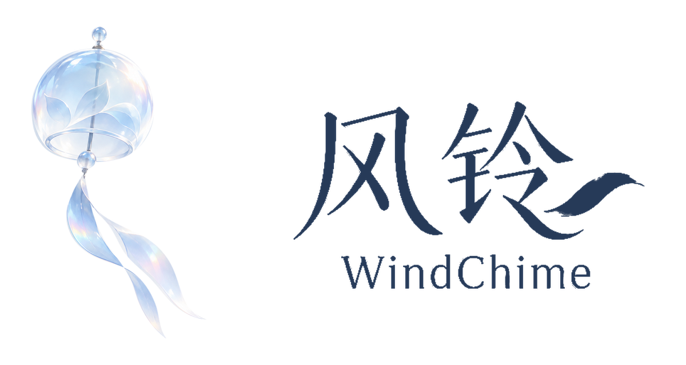
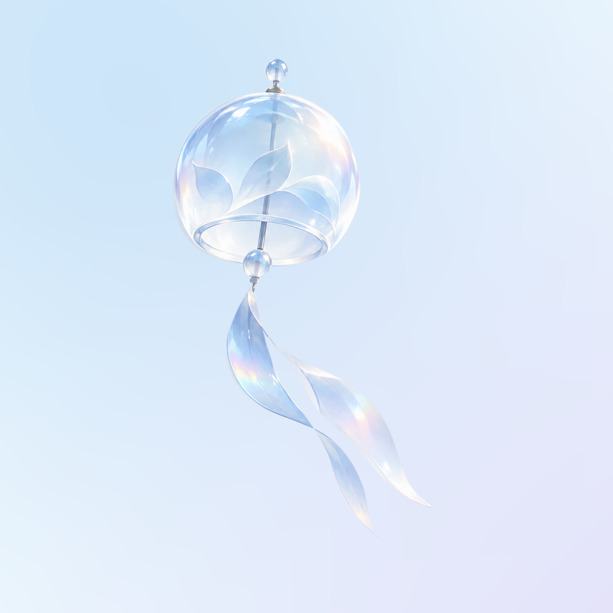
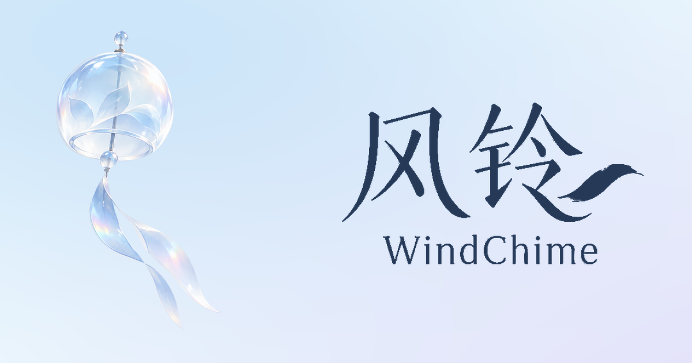
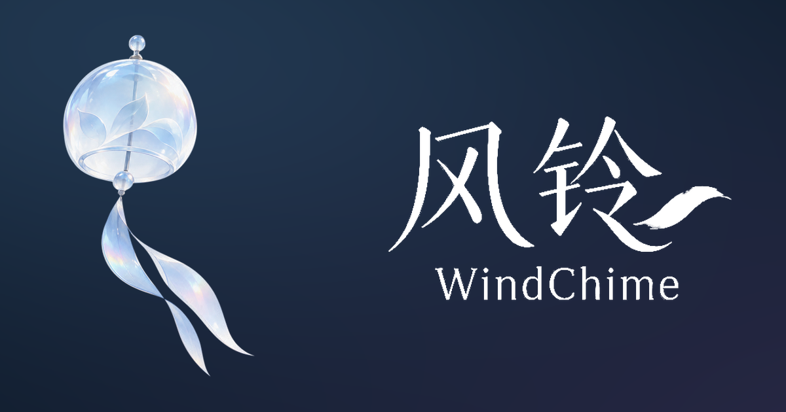
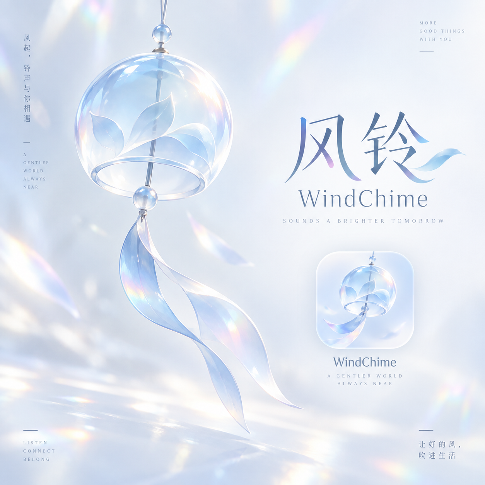

小尺寸简化图形 / black导航栏、浏览器标签、小尺寸图标512 × 512 px04_Monochrome/WindChime_symbol_small_black.png单独打开 / 保存 PNG
小尺寸简化图形 / white导航栏、浏览器标签、小尺寸图标512 × 512 px04_Monochrome/WindChime_symbol_small_white.png单独打开 / 保存 PNG
中英文字标 · 描摹路径 / navy独立字标、印刷及深浅背景1000 × 576 px03_Wordmarks/WindChime_wordmark_bilingual_navy.png单独打开 / 保存 PNG
中英文字标 · 描摹路径 / white独立字标、印刷及深浅背景1000 × 576 px03_Wordmarks/WindChime_wordmark_bilingual_white.png单独打开 / 保存 PNG
PDF中英文字标 · 描摹路径 / white独立字标、印刷及深浅背景纯路径03_Wordmarks/WindChime_wordmark_bilingual_white.pdf单独打开 / 保存 PDF
英文字标 · 描摹路径 / navy英文导航、项目署名1065 × 174 px03_Wordmarks/WindChime_wordmark_english_navy.png单独打开 / 保存 PNG
英文字标 · 描摹路径 / white英文导航、项目署名1065 × 174 px03_Wordmarks/WindChime_wordmark_english_white.png单独打开 / 保存 PNG
琉璃横版组合 · light WebP网页加载1200 × 640 px02_Lockups/WindChime_horizontal_glass_light.webp单独打开 / 保存 WEBP
琉璃横版组合 · dark WebP网页加载1200 × 640 px02_Lockups/WindChime_horizontal_glass_dark.webp单独打开 / 保存 WEBP
英文横版组合 · dark英文页面、项目介绍1000 × 380 px02_Lockups/WindChime_horizontal_english_dark.png单独打开 / 保存 PNG
单色横版组合 / white合同、信头、单色印刷1650 × 930 px02_Lockups/WindChime_horizontal_mono_white.png单独打开 / 保存 PNG
应用图标 · light · 1024应用图标母版；方形满版，由应用平台裁切1024 × 1024 px05_App_Icons/WindChime_app_light_1024.png单独打开 / 保存 PNG
应用图标 · dark · 1024应用图标母版；方形满版，由应用平台裁切1024 × 1024 px05_App_Icons/WindChime_app_dark_1024.png单独打开 / 保存 PNG
WEBMANIFEST网站图标配置示例将本文件夹复制到public/brand；按实际部署修改路径WEBMANIFEST06_Web_Favicons/site.webmanifest单独打开 / 保存 WEBMANIFEST
分享封面 · light网页分享卡片、项目介绍封面1200 × 630 px07_Social/WindChime_share_light_1200x630.png单独打开 / 保存 PNG
分享封面 · dark网页分享卡片、项目介绍封面1200 × 630 px07_Social/WindChime_share_dark_1200x630.png单独打开 / 保存 PNG
选定原稿 · 仅作参考对照最初选定的第二款，不作为可拆层源文件1254 × 1254 px09_Source_Reference/Approved_Concept_Reference.png单独打开 / 保存 PNG